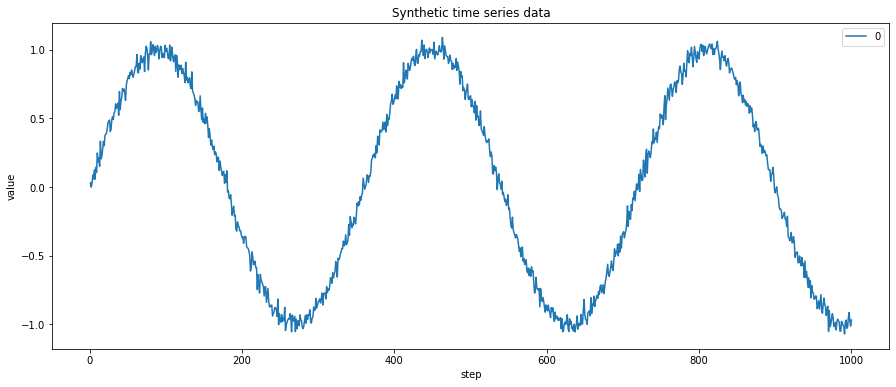
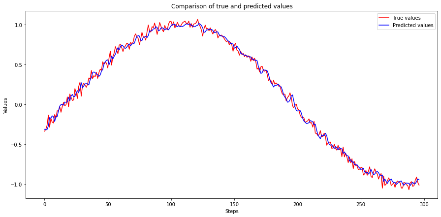
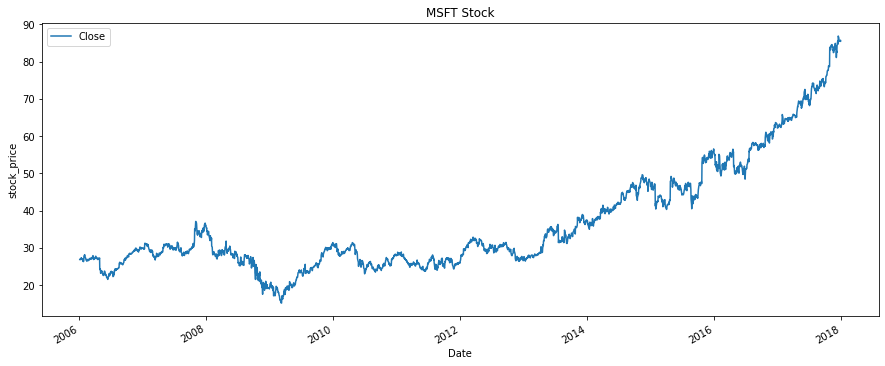

Code
python==3.7.15
numpy==1.21.6
torch==1.12.1+cu113
matplotlib==3.2.2
seaborn==0.11.2
This notebook takes inspiration and ideas from the following sources.
This notebook is prepared with Google Colab.
python==3.7.15
numpy==1.21.6
torch==1.12.1+cu113
matplotlib==3.2.2
seaborn==0.11.2Recurrent Neural Network (RNN) is great for exploiting data that involves one-dimensional (1D) ordered structures. We call these 1D-ordered structures sequences. Two main sequence problems are Time series and Natural Language Processing (NLP). RNN and its variants are developed to work for both types of sequence problems, but in this notebook we will only deal with time series sequences.
I have divided this notebook into two sections. In the first section, our focus will be on understanding the structure of sequences and generating training sets and batches from them. We will develop a simple (synthetic) sequence data and then create its training set. Next, we will make batches using PyTorch DataLoaders and write a training pipeline. We will end this section by training an RNN on this data.
In the next section, our focus will be more on the internals of different neural architectures for sequence data problems. We will use stock price data and train multiple networks (RNN, GRU, LSTM, CNN) on it while understanding their features and behavior.
This section focuses on understanding the structure of one-dimensional ordered sequences and generating training sets from them.
Let’s generate some one dimensional ordered sequence data.
# from numpy.ma.core import size
import numpy as np
import matplotlib.pyplot as plt
import pandas as pd
# generate 1000 data points
n_points = 1000
noise = 0.04
X_synth = np.arange(1, n_points + 1, 1)
y_synth = np.sin(X_synth * np.pi / 180) + np.random.randn(n_points) * noise
df_synth = pd.DataFrame(y_synth, index=X_synth)
# plot timeseries data
df_synth.plot(figsize=(15, 6))
plt.ylabel("value")
plt.xlabel("step")
plt.title("Synthetic time series data")
plt.show()
In the above plot, X dimension represents the time or steps. And y dimension represents the measurements. In actual data, these measurements could represent price stocks, temperature, population, etc. If we print our DataFrame, it has only one column which shows the measurements. The DataFrame index represents the time dimension.
Notice that our data does not have any labels. We usually have features and labels to train our model in supervised learning problems. However, sequence data is unique as we try to predict the next value from the sequence data itself. Therefore, we don’t have to provide labels with our data separately but can generate them from the sequence itself.
Let’s use a simple ordered sequence of 15 integers to understand how the training set is created from it.
##
# generate a simple sequential data of 15 integers
data_dummy = np.arange(15)
print(data_dummy)
# create a DataFrame of this sequence
df_dummy = pd.DataFrame(data_dummy)[ 0 1 2 3 4 5 6 7 8 9 10 11 12 13 14]We can split this long sequence into multiple smaller sequences (as training and test sets). The earlier part of the sequence will contain training features, and the last element acts as a label.
I have created a helper function that will take a sequence DataFrame, and split it into training features and labels.
##
# create a function to generate multiple sequences for training and testing
# look_back = size of the generated sets
def generate_sequences(df, test_size=0.3, look_back=10):
data = []
df_raw = df.values
for index in range(len(df_raw) - look_back):
data.append(df_raw[index : index + look_back])
data = np.array(data)
test_set_size = int(np.round(test_size * data.shape[0]))
train_set_size = data.shape[0] - (test_set_size)
x_train = data[:train_set_size, :-1, :]
y_train = data[:train_set_size, -1, :]
x_test = data[train_set_size:, :-1]
y_test = data[train_set_size:, -1, :]
return [x_train, y_train, x_test, y_test]Let’s apply this function to our sequence and check the output.
##
# generate test and train sequences
# x = features
# y = labels
x_train_dummy, y_train_dummy, x_test_dummy, y_test_dummy = generate_sequences(df_dummy)
# view the training data. features and labels together
# feature 't' = labels
df_train_dummy = pd.DataFrame(np.squeeze(x_train_dummy))
df_train_dummy["t"] = np.squeeze(y_train_dummy)
df_train_dummy.head(10)| 0 | 1 | 2 | 3 | 4 | 5 | 6 | 7 | 8 | t | |
|---|---|---|---|---|---|---|---|---|---|---|
| 0 | 0 | 1 | 2 | 3 | 4 | 5 | 6 | 7 | 8 | 9 |
| 1 | 1 | 2 | 3 | 4 | 5 | 6 | 7 | 8 | 9 | 10 |
| 2 | 2 | 3 | 4 | 5 | 6 | 7 | 8 | 9 | 10 | 11 |
Notice that our training set has smaller sequences, with the last element acting as a label denoted by column ‘t’. This is because our generate_sequences function acts as a moving window where earlier elements become features and the last element in the window acts as a label.
Let’s also check the generated testing set.
##
# view the testing data. features and labels together
# feature 't' = labels
df_test_dummy = pd.DataFrame(np.squeeze(x_test_dummy))
df_test_dummy["t"] = np.squeeze(y_test_dummy)
df_test_dummy.head(10)| 0 | 1 | 2 | 3 | 4 | 5 | 6 | 7 | 8 | t | |
|---|---|---|---|---|---|---|---|---|---|---|
| 0 | 3 | 4 | 5 | 6 | 7 | 8 | 9 | 10 | 11 | 12 |
| 1 | 4 | 5 | 6 | 7 | 8 | 9 | 10 | 11 | 12 | 13 |
From this sequence example, we have learned that we can generate training and test sets of different sizes using the same sequence data. The features and label aren’t provided separately but can be produced by splitting the sequence data into smaller chunks. The last element in the chunks acts as the label.
Let’s apply this understanding to our synthetic data and generate training and test samples.
Now let’s load our data into Dataset and DataLoader classes. PyTorch Dataset is a helper class that converts data and labels into a list of tuples. DataLoader is another helper class to create batches from Dataset tuples. batch_size means the number of tuples we want in a single batch. We have used 16 here, so each fetch from DataLoader will give us a list of 16 tuples.
import torch
from torch.utils.data import DataLoader, TensorDataset
train_dataset_synth = TensorDataset(
torch.as_tensor(x_train_synth).float(), torch.as_tensor(y_train_synth).float()
)
test_dataset_synth = TensorDataset(
torch.as_tensor(x_test_synth).float(), torch.as_tensor(y_test_synth).float()
)
batch_size = 16
train_loader_synth = DataLoader(
train_dataset_synth, batch_size=batch_size, shuffle=True
)
test_loader_synth = DataLoader(test_dataset_synth, batch_size=batch_size)In this section we will implement a class that encapsulates all the usual steps required in training a PyTorch model. This way we can focus more on the model architecture and performance, and less concerned about the boilerplate training loop. Important parts of this class are
__init__: Class constructor to define the main actors in a training cycle including model, optimizer, loss function, training and validation DataLoaders_make_train_step_fn: Training pipeline is usually called “training step” which includes the following steps
_make_val_step_fn: Validation pipeline is usually called the “validation step” which includes the following steps
_mini_batch: It defines the steps to process a single minibatch in a helper function. For a mini-batch processing, we want to
train: Execute training and validation steps for given number of epochpredict: Make a prediction from model on provided dataimport numpy as np
import datetime
class DeepLearningPipeline(object):
def __init__(self, model, loss_fn, optimizer):
# Here we define the attributes of our class
# We start by storing the arguments as attributes
# to use them later
self.model = model
self.loss_fn = loss_fn
self.optimizer = optimizer
self.device = "cuda" if torch.cuda.is_available() else "cpu"
# Let's send the model to the specified device right away
self.model.to(self.device)
# These attributes are defined here, but since they are
# not informed at the moment of creation, we keep them None
self.train_loader = None
self.val_loader = None
self.writer = None
# These attributes are going to be computed internally
self.losses = []
self.val_losses = []
self.total_epochs = 0
# Creates the train_step function for our model,
# loss function and optimizer
# Note: there are NO ARGS there! It makes use of the class
# attributes directly
self.train_step_fn = self._make_train_step_fn()
# Creates the val_step function for our model and loss
self.val_step_fn = self._make_val_step_fn()
def set_loaders(self, train_loader, val_loader=None):
# This method allows the user to define which train_loader (and val_loader, optionally) to use
# Both loaders are then assigned to attributes of the class
# So they can be referred to later
self.train_loader = train_loader
self.val_loader = val_loader
def _make_train_step_fn(self):
# This method does not need ARGS... it can refer to
# the attributes: self.model, self.loss_fn and self.optimizer
# Builds function that performs a step in the train loop
def perform_train_step_fn(x, y):
# Sets model to TRAIN mode
self.model.train()
# Step 1 - Computes our model's predicted output - forward pass
yhat = self.model(x)
# Step 2 - Computes the loss
loss = self.loss_fn(yhat, y)
# Step 3 - Computes gradients for both "a" and "b" parameters
loss.backward()
# Step 4 - Updates parameters using gradients and the learning rate
self.optimizer.step()
self.optimizer.zero_grad()
# Returns the loss
return loss.item()
# Returns the function that will be called inside the train loop
return perform_train_step_fn
def _make_val_step_fn(self):
# Builds function that performs a step in the validation loop
def perform_val_step_fn(x, y):
# Sets model to EVAL mode
self.model.eval()
# Step 1 - Computes our model's predicted output - forward pass
yhat = self.model(x)
# Step 2 - Computes the loss
loss = self.loss_fn(yhat, y)
# There is no need to compute Steps 3 and 4,
# since we don't update parameters during evaluation
return loss.item()
return perform_val_step_fn
def _mini_batch(self, validation=False):
# The mini-batch can be used with both loaders
# The argument `validation`defines which loader and
# corresponding step function is going to be used
if validation:
data_loader = self.val_loader
step_fn = self.val_step_fn
else:
data_loader = self.train_loader
step_fn = self.train_step_fn
if data_loader is None:
return None
# Once the data loader and step function, this is the
# same mini-batch loop we had before
mini_batch_losses = []
for x_batch, y_batch in data_loader:
x_batch = x_batch.to(self.device)
y_batch = y_batch.to(self.device)
mini_batch_loss = step_fn(x_batch, y_batch)
mini_batch_losses.append(mini_batch_loss)
loss = np.mean(mini_batch_losses)
return loss
def set_seed(self, seed=42):
torch.backends.cudnn.deterministic = True
torch.backends.cudnn.benchmark = False
torch.manual_seed(seed)
np.random.seed(seed)
def train(self, n_epochs, seed=42, print_loss=False):
# To ensure reproducibility of the training process
self.set_seed(seed)
for epoch in range(n_epochs):
# Keeps track of the numbers of epochs
# by updating the corresponding attribute
self.total_epochs += 1
# inner loop
# Performs training using mini-batches
loss = self._mini_batch(validation=False)
self.losses.append(loss)
if print_loss:
if epoch % 10 == 0 and epoch != 0:
print("Epoch ", epoch, "MSE: ", loss)
# VALIDATION
# no gradients in validation!
with torch.no_grad():
# Performs evaluation using mini-batches
val_loss = self._mini_batch(validation=True)
self.val_losses.append(val_loss)
# If a SummaryWriter has been set...
if self.writer:
scalars = {"training": loss}
if val_loss is not None:
scalars.update({"validation": val_loss})
# Records both losses for each epoch under the main tag "loss"
self.writer.add_scalars(
main_tag="loss", tag_scalar_dict=scalars, global_step=epoch
)
if self.writer:
# Closes the writer
self.writer.close()
def predict(self, x):
# Set is to evaluation mode for predictions
self.model.eval()
# Takes aNumpy input and make it a float tensor
x_tensor = torch.as_tensor(x).float()
# Send input to device and uses model for prediction
y_hat_tensor = self.model(x_tensor.to(self.device))
# Set it back to train mode
self.model.train()
# Detaches it, brings it to CPU and back to Numpy
return y_hat_tensor.detach().cpu().numpy()
def plot_losses(self):
fig = plt.figure(figsize=(10, 4))
plt.plot(self.losses, label="Training Loss", c="b")
plt.plot(self.val_losses, label="Validation Loss", c="r")
plt.yscale("log")
plt.xlabel("Epochs")
plt.ylabel("Loss")
plt.legend()
plt.tight_layout()
return figWe have all the pieces ready to train a neural network on the ordered sequence data. So here, I will train an RNN model on the generated data. At this point, I will not go into the details of the structure and working of RNN. But in the next section, we will discuss it in much more detail.
# configure an RNN model
import torch.nn as nn
import torch.optim as optim
class RnnModel(nn.Module):
def __init__(self, n_features, hidden_dim, n_outputs, n_layers):
super(RnnModel, self).__init__()
self.hidden_dim = hidden_dim
self.n_features = n_features
self.n_outputs = n_outputs
self.n_layers = n_layers
self.hidden = None
# Simple RNN
self.basic_rnn = nn.RNN(
self.n_features, self.hidden_dim, self.n_layers, batch_first=True
)
# Classifier to produce as many logits as outputs
self.classifier = nn.Linear(self.hidden_dim, self.n_outputs)
def forward(self, X):
# X is batch first (N, L, F)
# output is (N, L, H)
# final hidden state is (1, N, H)
# print(X.shape)
batch_first_output, self.hidden = self.basic_rnn(X)
# print("check1")
# only last item in sequence (N, 1, H)
last_output = batch_first_output[:, -1]
# classifier will output (N, 1, n_outputs)
out = self.classifier(last_output)
# final output is (N, n_outputs)
return out.view(-1, self.n_outputs)Configure model loss and optimizer.
Run the training pipeline.
dlp_rnn = DeepLearningPipeline(rnn_model, rnn_loss, rnn_optimizer)
dlp_rnn.set_loaders(train_loader_synth, test_loader_synth)
dlp_rnn.train(100, print_loss=True)Epoch 10 MSE: 0.0043875276698434554
Epoch 20 MSE: 0.003170915104088966
Epoch 30 MSE: 0.0032213201127226716
Epoch 40 MSE: 0.003209590242477134
Epoch 50 MSE: 0.0030302550162146376
Epoch 60 MSE: 0.0031480757964097643
Epoch 70 MSE: 0.002840602589210241
Epoch 80 MSE: 0.0030571757948068394
Epoch 90 MSE: 0.0031562208208594134Plot the model loss.
Get predictions on the test data.
Calculate mean squared error.
import math
from sklearn.metrics import mean_squared_error
from math import sqrt
# calculate root mean squared error
trainScore = math.sqrt(
mean_squared_error(y_train_synth[:, 0], y_train_pred_synth[:, 0])
)
print("Train Score: %.2f RMSE" % (trainScore))
testScore = math.sqrt(mean_squared_error(y_test_synth[:, 0], y_test_pred_synth[:, 0]))
print("Test Score: %.2f RMSE" % (testScore))Train Score: 0.05 RMSE
Test Score: 0.05 RMSEPlot the predicted values along with true values on the test data.
def plot_predictions(y, y_pred, model_name=""):
plt.figure(figsize=(15, 7))
x = np.arange(len(y))
plt.plot(x, y, color="red", label="True values")
plt.plot(x, y_pred, color="blue", label="Predicted values")
title = "Comparison of true and predicted values"
if len(model_name):
title = model_name + ": " + title
plt.title(title)
plt.xlabel("Steps")
plt.ylabel("Values")
plt.legend()
plt.show()
plot_predictions(y_test_synth, y_test_pred_synth)
That is the end of Section I. We have successfully trained a recurrent neural network on ordered sequence data, and our predicted values are very close to the actual values. We have also learned to use ordered sequences to generate training and test data sets with features and labels.
In this section, we will use actual stock price data and try to predict future stock prices. I will be using Microsoft Corporation stock price data from 2006 to 2018, and it can be obtained from Kaggle using this link: MSFT_2006-01-01_to_2018-01-01.csv.
Let’s load this data and view the stock prices as a plot.
folder = "./datasets/2022-11-07-timeseries-rnn-gru-lstm-cnn-pytorch/"
file_name = "MSFT_2006-01-01_to_2018-01-01.csv"
df_msft = pd.read_csv(folder + file_name, parse_dates=True, index_col=0)
df_msft[["Close"]].plot(figsize=(15, 6))
plt.ylabel("stock_price")
plt.title("MSFT Stock")
plt.show()
##
# Range of the stock price
print("Minimum stock price: ", min(df_msft['Close'].values))
print("Maximum stock price: ", max(df_msft['Close'].values)) Minimum stock price: 15.15
Maximum stock price: 86.85From the above plot, we can see that the price value continuously increases over time, and the range of prices is roughly between 15 to 87 USD. This scale is not good news for neural networks as they work best when they get data on a scale closer to zero. Preferably -1 to 1. So in the next cell, we will convert our data to a much smaller scale.
from sklearn.preprocessing import MinMaxScaler
scaler = MinMaxScaler(feature_range=(-1, 1))
df_msft = df_msft[["Close"]]
# fill any missing values as a precaution
df_msft = df_msft.fillna(method="ffill")
# create a copy for scaling and keep original data
df_msft_scaled = df_msft.copy(deep=True)
df_msft_scaled["Close"] = scaler.fit_transform(df_msft["Close"].values.reshape(-1, 1))
print("*** Before scaling ***\n", df_msft.tail())
print("\n*** After scaling ***\n", df_msft_scaled.tail())*** Before scaling ***
Close
Date
2017-12-22 85.51
2017-12-26 85.40
2017-12-27 85.71
2017-12-28 85.72
2017-12-29 85.54
*** After scaling ***
Close
Date
2017-12-22 0.962622
2017-12-26 0.959554
2017-12-27 0.968201
2017-12-28 0.968480
2017-12-29 0.963459In the next step we will generate training and test sets for our data.
Now let’s load this data into PyTorch Dataset and DataLoader class.
import torch
from torch.utils.data import DataLoader, Dataset, random_split, TensorDataset
train_data = TensorDataset(
torch.as_tensor(x_train_scaled).float(), torch.as_tensor(y_train_scaled).float()
)
test_data = TensorDataset(
torch.as_tensor(x_test_scaled).float(), torch.as_tensor(y_test_scaled).float()
)
batch_size = 32
train_loader = DataLoader(train_data, batch_size=batch_size, shuffle=True)
test_loader = DataLoader(test_data, batch_size=batch_size)Let’s train the same RNN we built in section 1 on stock prices data, and check it’s performance.
##
# check the dimension for one batch
temp = next(iter(train_loader))
len(temp[0]), len(temp[0][0]), len(temp[0][0][0]) # N (batch_size), L (seq len), F (n_features)(32, 29, 1)##
# start training pipeline
dlp_rnn = DeepLearningPipeline(model, loss, optimizer)
dlp_rnn.set_loaders(train_loader, test_loader)
dlp_rnn.train(100, print_loss=True)Epoch 10 MSE: 0.00026397304452874585
Epoch 20 MSE: 0.00022604088944993265
Epoch 30 MSE: 0.00023406338930891997
Epoch 40 MSE: 0.00029436370514855355
Epoch 50 MSE: 0.000270840552151309
Epoch 60 MSE: 0.000291384112201878
Epoch 70 MSE: 0.00026263904168665636
Epoch 80 MSE: 0.00022778069747304968
Epoch 90 MSE: 0.00023518060378123528Plot training and validation loss.
In the next cell, we will make predictions on the test data. After that, we will invert (or rescale) predicted and actual values to their original scale. Once that is done, we will use predicted and actual values to calculate RMSE (Root Mean Squared Error).
##
# make predictions on the test data
y_test_pred_scaled = dlp_rnn.predict(x_test_scaled)
y_train_pred_scaled = dlp_rnn.predict(x_train_scaled)
# invert predictions and true values
y_train_pred = scaler.inverse_transform(y_train_pred_scaled)
y_train = scaler.inverse_transform(y_train_scaled)
y_test_pred = scaler.inverse_transform(y_test_pred_scaled)
y_test = scaler.inverse_transform(y_test_scaled)
# calculate root mean squared error
trainScore = math.sqrt(mean_squared_error(y_train[:, 0], y_train_pred[:, 0]))
testScore = math.sqrt(mean_squared_error(y_test[:, 0], y_test_pred[:, 0]))
print("Train Score: %.2f RMSE" % (trainScore))
print("Test Score: %.2f RMSE" % (testScore))Train Score: 0.52 RMSE
Test Score: 2.37 RMSEPlot the True and Predicted values.
The above plot shows that the RNN model can correctly predict values till about 500 steps, but after that predictions start to diverge, and the gap keeps increasing as time passes.
If you revisit section 1 topic ‘Model configuration and training’, we have built an RNN model using PyTorch nn.RNN class.
self.basic_rnn = nn.RNN(self.n_features, self.hidden_dim, self.n_layers, batch_first=True)
From PyTorch documentation, we don’t get much information on the internal working of this class as it only gives a short description. (Link here)
Applies a multi-layer Elman RNN with
tanhorReLUnon-linearity to an input sequence.
PyTorch Step By Step Chapter 8 does a great job of explaining the internal working of an RNN Cell. I have taken the following image from the book’s official GitHub repo.
 Image Source: dvgodoy/PyTorchStepByStep/blob/master/Chapter08
Image Source: dvgodoy/PyTorchStepByStep/blob/master/Chapter08
From this image we can reason the following
linear_inputlinear_hiddenXThe processing of an RNN cell can be described in the following steps
X=[x0, x1]) to input linear layer (linear_input) and get the output (tx=[t0, t1])th=[h0, h1]). Since at the start we don’t have a hidden state from the last step, we can manually assign hidden state as zeros and pass it to hidden linear layer.tx and th. Let’s call it addingtanh. The output is the new “hidden state” and will be used in the next step.Now that we have learned how an RNN cell works let’s build it ourselves without relying on PyTorch nn.RNN class. To ensure that our custom RNN cell produces the same output as nn.RNN, we will do the following test
linear_input and linear_hidden respectively)##
# create nn.RNN cell from PyTorch class
rnn_cell = nn.RNNCell(input_size=n_features, hidden_size=hidden_dim)
rnn_state = rnn_cell.state_dict()
rnn_stateOrderedDict([('weight_ih', tensor([[-0.6701, -0.5811],
[-0.0170, -0.5856]])),
('weight_hh', tensor([[ 0.1159, -0.6978],
[ 0.3241, -0.0983]])),
('bias_ih', tensor([-0.3163, -0.2153])),
('bias_hh', tensor([ 0.0722, -0.3242]))])In the last two cells, we have created two linear layers for our custom RNN cell and an instance of PyTorch nn.RNN class. In the next step, we will assign a copy of weights from nn.RNN to linear layers. This way both will have the same initial weights.
Let’s create an input data point X with two dimensions x0 and x1 * X = [x0, x1] * x0 = 1.0349 * x1 = 0.9661
Now let’s follow the steps we have defined for working of an RNN cell.
##
# 1. Pass input (`X=[x0, x1]`) to input linear layer (linear_input) and get the output (`tx=[t0, t1`])
tx = linear_input(X)
txtensor([-1.5712, -0.7985], grad_fn=<AddBackward0>)##
# 2. Pass the last "hidden state" to the hidden linear layer (linear_hidden), and get the output (`th=[h0, h1`]).
# Since this is the first step, and we don't have a hidden state from the last step,
# we can manually assign hidden state as zeros and pass it to hidden linear layer.
initial_hidden = torch.zeros(1, hidden_dim)
th = linear_hidden(initial_hidden)
thtensor([[ 0.0722, -0.3242]], grad_fn=<AddmmBackward0>)tensor([[-1.4991, -1.1227]], grad_fn=<AddBackward0>)##
# 4. pass the 'adding' to activation function `tanh`. The output is the new "hidden state" and will be used for upcoming inputs
new_hidden_state = torch.tanh(t_hx)
new_hidden_statetensor([[-0.9050, -0.8085]], grad_fn=<TanhBackward0>)We have an output from our custom RNN cell. This is the new hidden state that will be passed to the linear_hidden layer in the next step.
Now time to compare this output with that of nn.RNN to see if they match or not.
Notice that the output from both the custom RNN cell and nn.RNN match. This means that we are successful in replicating the internal working of nn.RNN class.
In this section we will apply gated recurrent units on the stock price data, and compare its performance with simple RNNs.
##
# GRU model configuration
class GruModel(nn.Module):
def __init__(self, n_features, hidden_dim, n_outputs, n_layers):
super(GruModel, self).__init__()
self.n_features = n_features
self.hidden_dim = hidden_dim
self.n_outputs = n_outputs
self.n_layers = n_layers
self.hidden = None
# Simple GRU
self.basic_rnn = nn.GRU(
self.n_features, self.hidden_dim, self.n_layers, batch_first=True
)
# Classifier to produce as many logits as outputs
self.classifier = nn.Linear(self.hidden_dim, self.n_outputs)
def forward(self, X):
# X is batch first (N, L, F)
# output is (N, L, H)
# final hidden state is (1, N, H)
batch_first_output, self.hidden = self.basic_rnn(X)
# only last item in sequence (N, 1, H)
last_output = batch_first_output[:, -1]
# classifier will output (N, 1, n_outputs)
out = self.classifier(last_output)
# final output is (N, n_outputs)
return out.view(-1, self.n_outputs)Configure model loss and optimizer.
Run the training pipeline for 100 epochs.
dlp_gru = DeepLearningPipeline(gru_model, gru_loss, gru_optimizer)
dlp_gru.set_loaders(train_loader, test_loader)
dlp_gru.train(100, print_loss=True)Epoch 10 MSE: 0.00022010822761909697
Epoch 20 MSE: 0.00020518084370864514
Epoch 30 MSE: 0.00020595710090922446
Epoch 40 MSE: 0.00020482327377204925
Epoch 50 MSE: 0.00022252999384143163
Epoch 60 MSE: 0.0002140117964396874
Epoch 70 MSE: 0.00023651681564815314
Epoch 80 MSE: 0.00020522110384208094
Epoch 90 MSE: 0.0002454350946980853Plot the training and validation loss.
Make prediction on test data and calculate the loss.
# make predictions
y_test_pred_scaled = dlp_gru.predict(x_test_scaled)
y_train_pred_scaled = dlp_gru.predict(x_train_scaled)
# invert predictions
y_train_pred = scaler.inverse_transform(y_train_pred_scaled)
y_train = scaler.inverse_transform(y_train_scaled)
y_test_pred = scaler.inverse_transform(y_test_pred_scaled)
y_test = scaler.inverse_transform(y_test_scaled)
# calculate root mean squared error
trainScore = math.sqrt(mean_squared_error(y_train[:, 0], y_train_pred[:, 0]))
testScore = math.sqrt(mean_squared_error(y_test[:, 0], y_test_pred[:, 0]))
print("Train Score: %.2f RMSE" % (trainScore))
print("Test Score: %.2f RMSE" % (testScore))Train Score: 0.48 RMSE
Test Score: 2.68 RMSEPlot predictions along with actual data.
GRU seems to be on par with RNN. It has a slightly better training score, but at the same time, it performed somewhat poorly on the validation data.
 Image Source: dvgodoy/PyTorchStepByStep/blob/master/Chapter08
Image Source: dvgodoy/PyTorchStepByStep/blob/master/Chapter08
From the above image we can see that GRU cell is more advanced than a simple RNN cell. It has two more weight layers commonly referred as gates
Reset gate: This weight layer is used to control how much of the past is needed to neglect or forget. This gate has a control r which is learned during training.
Update gate: This weight layer is used to control how much of the past information is needed to be passed on to the next step. This gate has a control z which is also learned during training.
How does having two extra learnable weight layers and their controls make GRU better than RNN?
Why learning and forgetting are important for recurrent neural networks?
Patterns change over time for ordered sequence data like stock prices, and we want our networks to be sensitive to such changes. A repeating hidden state helps the network connect the dots between new information it has received and the past it has learned. If the network finds the new information it received has changed from past learning, it will try to unlearn some of the past experiences and learn the new pattern. Different variants of RNN are designed to give more and more such controls to the network and make it efficient in deciding which information to learn or forget.
In this section we will apply lstm on the stock price data, and compare its performance with RNN and GRU.
##
# LSTM model configuration
class LstmModel(nn.Module):
def __init__(self, n_features, hidden_dim, n_outputs, n_layers):
super(LstmModel, self).__init__()
self.hidden_dim = hidden_dim
self.n_features = n_features
self.n_outputs = n_outputs
self.n_layers = n_layers
self.hidden = None
self.cell = None
# Simple LSTM
self.basic_rnn = nn.LSTM(
self.n_features, self.hidden_dim, self.n_layers, batch_first=True
)
# Classifier to produce as many logits as outputs
self.classifier = nn.Linear(self.hidden_dim, self.n_outputs)
def forward(self, X):
# X is batch first (N, L, F)
# output is (N, L, H)
# final hidden state is (1, N, H)
# final cell state is (1, N, H)
batch_first_output, (self.hidden, self.cell) = self.basic_rnn(X)
# only last item in sequence (N, 1, H)
last_output = batch_first_output[:, -1]
# classifier will output (N, 1, n_outputs)
out = self.classifier(last_output)
# final output is (N, n_outputs)
return out.view(-1, self.n_outputs)Define model loss and optimizer.
Run the training pipeline.
dlp_lstm = DeepLearningPipeline(lstm_model, lstm_loss, lstm_optimizer)
dlp_lstm.set_loaders(train_loader, test_loader)
dlp_lstm.train(100, print_loss=True)Epoch 10 MSE: 0.0003263879698351957
Epoch 20 MSE: 0.000262940919569563
Epoch 30 MSE: 0.0002264043755668822
Epoch 40 MSE: 0.000254558740076997
Epoch 50 MSE: 0.0002543745165784265
Epoch 60 MSE: 0.00028126772259852396
Epoch 70 MSE: 0.00025442599127762315
Epoch 80 MSE: 0.00020528354511814982
Epoch 90 MSE: 0.00022827486629301512Print the training and validation loss.
Make predictions on the test data and calculate the error.
# make predictions
y_test_pred_scaled = dlp_lstm.predict(x_test_scaled)
y_train_pred_scaled = dlp_lstm.predict(x_train_scaled)
# invert predictions
y_train_pred = scaler.inverse_transform(y_train_pred_scaled)
y_train = scaler.inverse_transform(y_train_scaled)
y_test_pred = scaler.inverse_transform(y_test_pred_scaled)
y_test = scaler.inverse_transform(y_test_scaled)
# calculate root mean squared error
trainScore = math.sqrt(mean_squared_error(y_train[:, 0], y_train_pred[:, 0]))
testScore = math.sqrt(mean_squared_error(y_test[:, 0], y_test_pred[:, 0]))
print("Train Score: %.2f RMSE" % (trainScore))
print("Test Score: %.2f RMSE" % (testScore))Train Score: 0.53 RMSE
Test Score: 0.93 RMSEPlot predicted values along with true values.
LSTM has performed much better on the test data compared to both RNN and GRU. But it has also taken more time to get trained.
 Image Source: dvgodoy/PyTorchStepByStep/blob/master/Chapter08
Image Source: dvgodoy/PyTorchStepByStep/blob/master/Chapter08
The above image shows that LSTM network has more learnable parameters and controls compared to RNN and GRU. There is
Forget gate: Similar to the reset gate in GRU, it controls which information needs attention and which can be ignored.Input gate and Cell state: LSTM is unique in that besides the hidden state, it also maintains a separate state called cell state. Cell state acts as a long-term memory, while the hidden state acts like a working or short-term memory. Input gate controls how to update the cell state based on past hidden state, past cell state, and new input.Update gate: Update gate controls how to update the hidden state to generate a new hidden state value. It gets influenced by past hidden states and new input. Cell state does not affect this gate.In this section we will take an alternate approach and apply a type of CNN on stock price data.
##
# 1D CNN model configuration
class CNNmodel(nn.Module):
def __init__(self):
super().__init__()
self.c1 = nn.Conv1d(1, 32, 2)
self.p1 = nn.AvgPool1d(2)
self.c2 = nn.Conv1d(32, 64, 1)
self.p2 = nn.AvgPool1d(2)
self.tanh = nn.Tanh()
self.fc1 = nn.Linear(448, 64)
self.fc2 = nn.Linear(64, 1)
def forward(self, x):
"""
x1: torch.Size([32, 32, 28])
x2: torch.Size([32, 32, 14])
x3: torch.Size([32, 64, 14])
x4: torch.Size([32, 64, 7])
x5: torch.Size([32, 448])
x6: torch.Size([32, 64])
x7: torch.Size([32, 1])
"""
x1 = self.c1(x)
x2 = self.p1(x1)
x3 = self.c2(x2)
x4 = self.p2(x3)
x4 = self.tanh(x4)
x5 = x4.reshape(x4.shape[0], -1)
x6 = self.fc1(x5)
x7 = self.fc2(x6)
return x7##
# change the dimension of dataset
# for CNN use: N (batch_size), F (n_features), L (seq len)
train_data_1d = TensorDataset(
torch.as_tensor(x_train_scaled).float().permute(0, 2, 1),
torch.as_tensor(y_train_scaled).float(),
)
test_data_1d = TensorDataset(
torch.as_tensor(x_test_scaled).float().permute(0, 2, 1),
torch.as_tensor(y_test_scaled).float(),
)
train_loader = DataLoader(train_data_1d, batch_size=32, shuffle=True)
test_loader = DataLoader(test_data_1d, batch_size=32)##
# check the dimensions of one batch
temp = next(iter(train_loader))
len(temp[0]), len(temp[0][0]), len(temp[0][0][0]) # N (batch_size), F (n_features), L (seq len)(32, 1, 29)##
# run the training pipeline
dlp_conv1d = DeepLearningPipeline(model, loss, optimizer)
dlp_conv1d.set_loaders(train_loader, test_loader)
dlp_conv1d.train(100, print_loss=True)Epoch 10 MSE: 0.000601009127973212
Epoch 20 MSE: 0.0005247063511915533
Epoch 30 MSE: 0.0004160549495171643
Epoch 40 MSE: 0.00038349507733735004
Epoch 50 MSE: 0.0005176076665520668
Epoch 60 MSE: 0.00043436023538974536
Epoch 70 MSE: 0.0004034905033415381
Epoch 80 MSE: 0.00036779195050423203
Epoch 90 MSE: 0.00027141175329840433##
# make predictions
y_test_pred_scaled = dlp_conv1d.predict(
torch.as_tensor(x_test_scaled).float().permute(0, 2, 1)
)
y_train_pred_scaled = dlp_conv1d.predict(
torch.as_tensor(x_train_scaled).float().permute(0, 2, 1)
)
# invert predictions
y_train_pred = scaler.inverse_transform(y_train_pred_scaled)
y_train = scaler.inverse_transform(y_train_scaled)
y_test_pred = scaler.inverse_transform(y_test_pred_scaled)
y_test = scaler.inverse_transform(y_test_scaled)
# calculate root mean squared error
trainScore = math.sqrt(mean_squared_error(y_train[:, 0], y_train_pred[:, 0]))
testScore = math.sqrt(mean_squared_error(y_test[:, 0], y_test_pred[:, 0]))
print("Train Score: %.2f RMSE" % (trainScore))
print("Test Score: %.2f RMSE" % (testScore))Train Score: 0.61 RMSE
Test Score: 2.07 RMSE1D ConvNet results stand between GRU and LSTM. It is performing better than RNN and GRU but less than LSTM.
How does 1D ConvNet compare to RNN?
1D ConvNets have 1D convolutions, i.e. they move the filter in one dimension from left to right like a moving window. These kernels (or filters) behave similarly to the hidden state in RNN